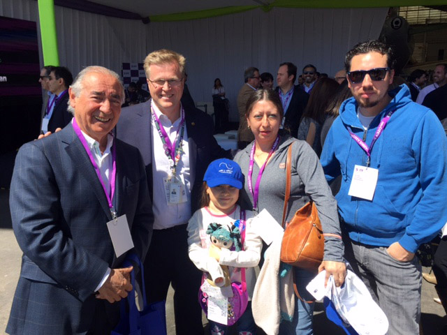

Fundación Niño y Cancer
“Encuentro con la Montaña”
Title description, Dec 7, 2017

Se efectuó recientemente entre el 10 y 13 de Septiembre. Fue un gran logro ya que en los últimos 2 años no se había podido efectuar por problemas de infraestructura. Este año fue realmente un éxito. Participaron niños desde Antofagasta a Punta Arenas. En total asistieron 65 personas. Esperamos que el próximo año participen también los pacientes de Arica. Agradecemos a Sky Air Line por el aporte de todos los pasajes aéreos. Cada grupo de niños vino acompañado por un adulto perteneciente el hospital de origen, enfermera, técnico paramédico , odontóloga, psicóloga, quienes cumplieron cabalmente su cometido. Los niños de provincias y acompañante alojaron en un Hostelling en calle Cienfuegos. La movilización se hizo en buses de Tour Bus con un precio muy especial.
A volar con Sky
Title description, Sep 2, 2017
La Fundación Niño y Cáncer quiere agradecer a SKY por su increible invitación. El Miércoles 4 de Octubre fuimos a volar en su nuevo avión A320neoSky. En la foto: CEO de Sky Holger Paulmann y una paciente de oncología
Agredecimiento del grupo de familias "Aprendiendo a revivir"
Title description, Sep 2, 2017

En el año 2009, comenzamos a realizar reuniones trimestrales con los padres cuyos hijos habían fallecido a causa del cáncer infantil; al principio fue muy dificil, no sabíamos muy bien que ibamos a hacer, ni como lo ibamos a llevar a cabo. Al mes de noviembre del 2014, hemos realizado 18 encuentros, donde en un principio solo participaban las madres. Hoy son familias, las que participan de cada encuentro, el grupo decidió llamarse "Aprendiendo a revivir", cada reunión a sido un éxito, porque cada miembro de la familia, a encontrado su espacio, donde poder hablar y expresar cada una de sus emociones, sin temor a ser juzgado, donde encuentran un lugar y un tiempo de dedicación exclusiva para conversar con otra madre, otro padre, otro abuelo(a) que vivio la misma experiencia que ella o él, donde pueden conversar con otra persona que "Sí les entiende", que "Sí tiene derecho a decirle: Yo sí te entiendo, porque a mí también se me murio un hijo"
El Voluntariado Hospitalario en Santiago

Está a cargo de la Presidenta Sra. Soledad Morales.
Este voluntariado trabaja en el Hospital Luis Calvo Mackenna. Su objetivo es acoger a los padres e hijos, brindándoles apoyo y acompañamiento. Las voluntarias informan a los padres cual es la misión que cumplen con los niños del hospital además de difundir los beneficios entregados a todos los niños por la Fundación Niño y Cáncer, tales como: Cena de navidad, Taller de Ski para niños amputados, Encuentro con la Montaña para niños en seguimiento, Campeonato de Futbolito y Porristas.
Renovación de Unidades de Oncología Infantil


El Hospital Guillermo Gran Benavente se inauguró en 1944, después del gran terremoto de 1939. Atiende a los pacientes de la 8ª Región recibiendo unos 60 a 70 pacientes con cáncer o leucemia nuevos por año, lo que es comparable con los grandes hospitales pediátricos de Santiago. En estos 67 años la medicina ha cambiado, los tipos de pacientes han cambiado y las instalaciones se han ido haciendo obsoletas y poco acogedoras. En el año 1944 nadie pensaba que un niño con cáncer se podía curar, hoy se cura el 70 a 80%.
Siguenos en redes sociales

|

|

|

|
Dirección: Tupungato 10070 Vitacura, Santiago de Chile
Teléfonos: 22170821 - 22170811
Fax: 22170820
Cta. Cte: Banco BCI N° 85999997 RUT: 72.169.900-5
Email: fundacion@ninoycancer.cl